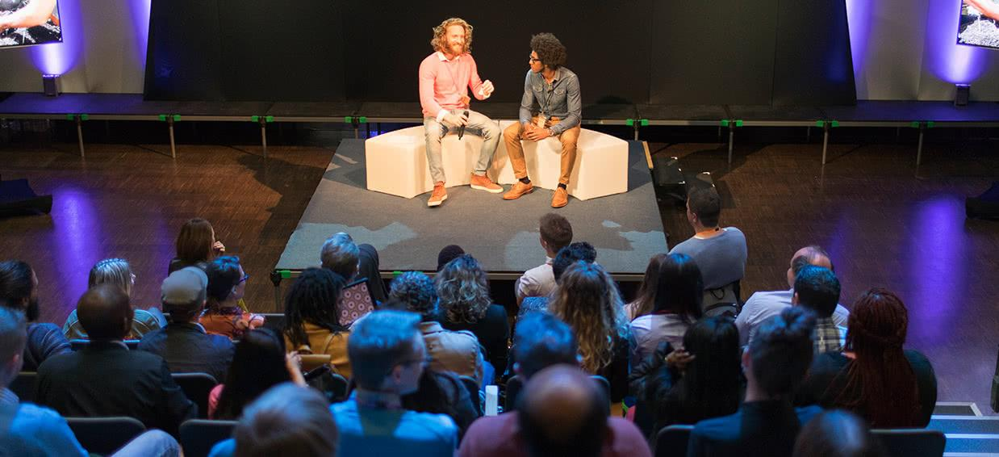

Zakelijke events: van heldere sprekersversterking tot muziek bij de borrel
DOELGROEPEN

Corporate events
Corporate events zijn er in vele soorten en maten. Een personeelsfeest voor een 100-jarig bestaan. Een productdemonstratie. Een seminar of rondetafelgesprek, met microfoons voor sprekers.
Deze opdrachten vragen om aandacht voor detail. Sprekers moeten goed verstaanbaar en zichtbaar zijn. De techniek moet passen bij de ruimte en de uitstraling van het merk. Soms is er ook een vraag naar aanvullende diensten, zoals een livestream of het ontwikkelen en uitzenden van een bedrijfsvideo. Daarnaast moet het programma soepel kunnen overgaan van inhoud naar ontmoeting of feest.
Een strakke basis of een complete show? Dat is aan jou
Voor een seminar of netwerkborrel is een strakke basis vaak genoeg: heldere sprekersversterking, sfeerlicht en muziek bij de borrel. Daarop kun je uitbreiden met bijvoorbeeld een lichtshow, videoschermen, een online uitzending of een dj.
Informeer naar de mogelijkheden →Wat kost audiovisuele ondersteuning van een evenement eigenlijk?
Eerder meedenken, als je dat wilt
Op verzoek schuift Maarten eerder in het proces aan. Bijvoorbeeld om mee te denken over het concept, het draaiboek of de vertaling naar licht en geluid, op het moment dat het je event helpt. Werkt er een technicus mee, dan plannen we op verzoek een korte online briefing, zodat hij vooraf weet wat er speelt.
Waar muziek en identiteit elkaar ontmoeten
Daarnaast zijn er zakelijke toepassingen die iets extra’s vragen, op het snijvlak van identiteit, techniek en muziek. Al jaren doet Maarten Versteeg dit als dj voor merken. Bijvoorbeeld de best passende muziek voor een catwalk, waarbij er vooraf afstemming is over de collectie en welke sound daarbij past. Of de muziek bij de introductie van een nieuwe serie horloges in Bazel, Zwitserland. Met 25 jaar corporate communicatie achtergrond weten we hoe je een merk versterkt.
Relevante producten en diensten

Benieuwd wat HEAR voor jouw zakelijke event kan doen?
Stel je vraag via WhatsApp→of plan een gesprek